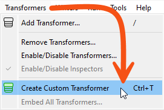
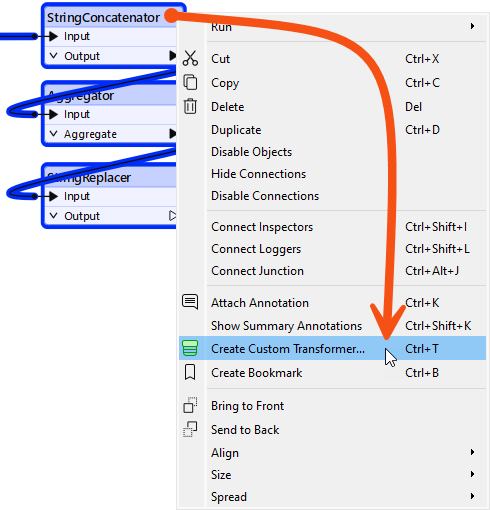
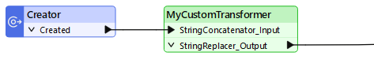
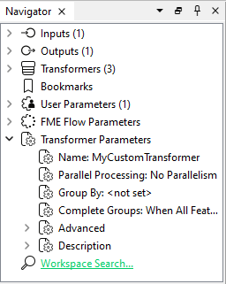
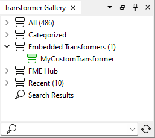
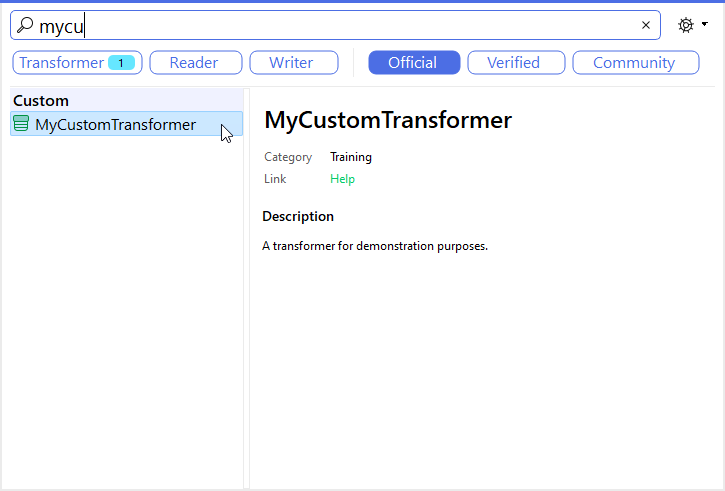

After completing this lesson, you’ll be able to:
A custom transformer is a sequence of standard transformers condensed into a single transformer. You can turn any existing sequence of transformers into a custom transformer.
Users can share custom transformers locally, on a network drive, or via the FME Hub. For example, the workspace above has a MeasureInterpolator custom transformer, which a user shared via the FME Hub.
⭐New for FME 2023.0: we have given custom transformer creation a significant upgrade for our advanced users. You can now create high-quality transformers using Python with the Transformer Designer and FME Packages SDK.
The FME Hub also features publisher tiers, allowing custom transformer creators and users to benefit from increased trust and visibility. There are three tiers:
- Safe Official items: Explore and download content provided by the Safe Development team.
- Verified Publisher items: Explore and download high-quality content external vendors provide.
- Community items: Explore and download content provided by external vendors.
The publisher tiers are displayed in FME Hub Search and FME Workbench Quick Add.
Custom transformers let you:
This course will teach you the basics of creating a custom transformer, controlling its input and output ports, and using parameters to let users control how it works.
You can check out Build a Library of Custom Transformers to learn more about sharing custom transformers.
If you want to learn how to use custom transformers with looping, check out Custom Transformers and Loops.
If you want to learn how to use custom transformers to improve your performance with parallel processing, check out Design for Performance.
You can create a custom transformer from scratch – i.e., start with an empty custom transformer and add content, or create it from an existing sequence of transformers.
Custom transformers are created by selecting Create Custom Transformer from the canvas context (right-click) menu or by selecting Transformers > Create Custom Transformer from the menubar. The shortcut key for this function is Ctrl + T (or Cmd ⌘ + T on a Mac).

If several transformers are selected when you issue the Create Custom Transformer command, the new custom transformer will automatically contain them. Otherwise, the new custom transformer will be empty except for an input and output port.
Here, a user is creating a new custom transformer based on a series of existing ones:

The new custom transformer will contain these three transformers.
All custom transformers require a name and (optionally) a category and description. A dialog to define these automatically appears when you create a new custom transformer.
You can set the category to match any existing FME transformer category or your custom category.
The Use Markdown parameter lets you enter information about the custom transformer, such as requirements for use, development history, and legal terms and conditions, using Markdown.

These fields are critical when sharing the custom transformer with work colleagues, clients, or the larger FME Community on the FME Hub.
A newly created custom transformer then looks like this:

It appears under a new tab on the Workbench canvas and consists of the original transformers with additional input and output objects.
When you click on the Main tab to return to the main canvas view, you will see that Workbench has replaced the original transformers with a custom transformer object:

This custom transformer looks and behaves like any standard FME transformer, with input and output ports (that match the input/output objects in the custom transformer tab) plus a parameters dialog.
To edit the contents of a custom transformer, click on the tab for that transformer. This action opens the transformer definition, and you may edit the content like in the main canvas.
In the Navigator window, where a workspace would have a section labeled Workspace Parameters, a custom transformer has Transformer Parameters:

In this section, you can edit the information you entered earlier – name, category, description, etc.
If you create a custom transformer from scratch without any original transformers selected, it will start empty and look like this:

Then, you can start building or editing the transformer from scratch. There is little difference between creating content in the main canvas and turning it into a custom transformer and creating an empty custom transformer and creating the content there.
Once you create a custom transformer, it appears on the main canvas and looks like a standard FME transformer, except it is a different color.
However, the resemblance to a standard transformer is more than just in appearance. In the same way that you can use multiple instances of a transformer in a workspace, you can use a custom transformer any number of times. This feature means custom transformers let you tidy a workspace and reuse content.
To place extra copies of a custom transformer you use - again like a standard transformer - double-click the transformer in the Transformer Gallery (look under a section labeled “Embedded Transformers):

...or you can use Quick Add:

The transformer name, category, and description appear in both the Quick Add tool and the help window, so it is worth setting these parameters.
Multiple instances of a custom transformer use the same core definition. Thus, there may be multiple instances on the Main canvas, but they share a single definition.
An essential benefit of this approach is that every instance is updated or edited when the custom transformer definition is changed.
For example, if you change a parameter for the Aggregator inside this custom transformer:

...then the parameter automatically changes for all transformer instances in the workspace.
Editing is more straightforward because changes must only be made once, no matter how often you have used that custom transformer.